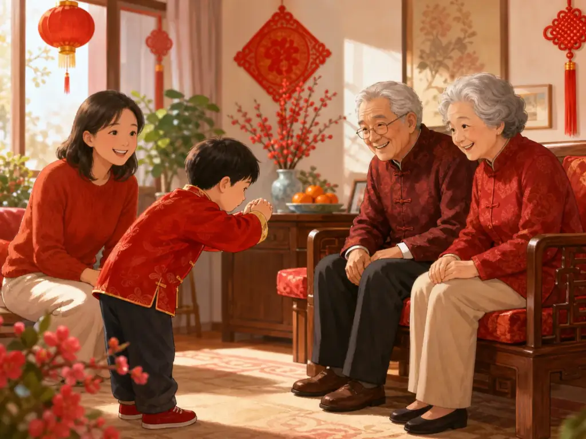
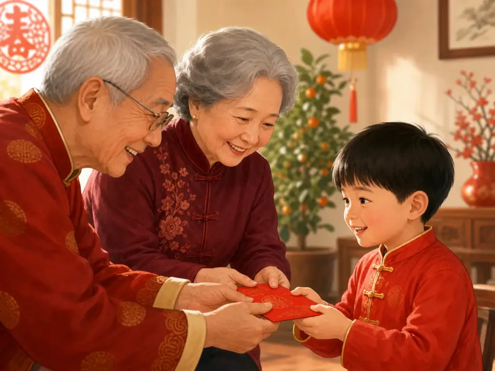

给长辈拜年：双手抱拳的学问
Greeting Elders at New Year
Page 1
等一下，我的手该放哪儿？
Wait—What Do I Do with My Hands?

A child greets older relatives at New Year; the gesture is not a step-by-step guide to formal gongshou greeting or a picture of every family's custom.
大年初一早上。新衣服穿好了，爷爷奶奶正笑着看你，连要说的话也已经记住了：“新年好！”
可是突然有一个小问题。手该放哪儿？过年时，很多家庭都有晚辈先向长辈拜年的习惯。有的直接说祝福，有的轻轻鞠躬，还有的会双手合抱，在胸前行一个传统的gǒngshǒu lǐ · 双手在身前相合的一种传统问候礼节。。
看别人做，好像很简单。轮到自己时，事情就复杂了：哪只手放外面？要不要握拳？身体要不要弯一点？突然觉得，“新年好”三个字反而最好办。
It is New Year’s morning. You have new clothes on. Your grandparents are smiling. You have even remembered what to say. “Happy New Year!” There is just one small problem. What are your hands supposed to do?
In many Chinese families, children greet older relatives first at New Year. Some simply say their good wishes. Some bow a little. Others bring both hands together in front of the chest in a traditional greeting called gǒngshǒu lǐ · 拱手礼 · A traditional greeting made by bringing both hands together in front of the body..
It looks simple—until you try it. One hand goes here. The other goes there. Do you make a fist? Which hand is outside? Are you supposed to bow too? Suddenly, saying “Happy New Year” seems like the easy part.
Page 2
为什么要把两只手放在一起？
Why Put Both Hands Together?
拱手礼是一种很古老的礼节。过去，人们见面、道谢、祝贺或者表示尊敬时，都可能用到它。而且，两只手怎么放，还真有过讲究。
传统礼法中，男子行拱手礼时一般左手在外、右手在内，女子则相反。有一种古老的解释认为，人通常用右手拿兵器，所以用左手把右手包住，就像是在告诉对方：我来见你，是带着善意来的。
听起来忽然有点像武侠故事。不过放心，爷爷奶奶大概并没有担心你是来打架的。
今天，各个家庭并不一定严格按照古代的手势来拜年。真正容易懂的，是动作背后的心意：停下来，面对长辈，把双手合在一起，认真送上一句祝福。动作很小，却让一句普通的“你好”变得不一样。新的一年开始了。我先来祝你平安顺利。
The cupped-hands greeting is very old. People used forms of it to greet others, give thanks, offer congratulations, and show respect. There were even rules about the hands.
In one traditional form, men placed the left hand outside the right, while women did the reverse. One old explanation says that because the right hand was often the hand used to hold a weapon, covering it showed peaceful intentions: I have come to greet you, not to fight you.
That makes the gesture sound rather dramatic. Luckily, Grandma is probably not worried that you have arrived for battle.
Today, families do not all follow the old hand positions exactly. The important part is easier to understand. You stop for a moment, face the person you are greeting, bring your hands together, and offer your good wishes with care. The movement is small, but it changes an ordinary “hello” into something more special. This is the first morning of a new year. I came to wish you well.
Page 3
然后，红包出现了
Then Comes the Red Envelope

A child receives a red envelope with both hands, showing a commonly taught courtesy rather than a fixed ritual followed by every family.
拜完年，爷爷笑了。奶奶伸手拿出一个红红的东西。啊。很多小朋友最期待的部分终于来了。
春节时，长辈常常会给晚辈hóngbāo · 节日或喜庆场合装钱赠送的红色封套。，里面装着yāsuìqián · 过年时长辈给孩子的钱，寄托平安和祝福。。关于“压岁钱”的来历，民间有不少说法，其中一个古老的说法认为，它可以帮助孩子压住邪祟，平平安安过一年。今天，我们当然不会把红包当成真的“护身法宝”，可是里面的意思还在：长辈希望孩子健康、平安、好运。
这时候，两只手又有任务了。很多孩子会被教着双手接过红包，再好好说一声“谢谢”。刚才，这双手是在送祝福。现在，它们又在接祝福。
Now the greeting is finished. Grandpa smiles. Grandma reaches for something red. Ah. Here comes the part many children have been waiting for.
A hóngbāo · 红包 · A red packet containing money, given during festivals and happy occasions. contains money. At New Year, older family members often give one to children. The money is also called yāsuìqián · 压岁钱 · New Year money given to children with wishes for safety and good fortune.. There are old folk stories about the name. One connects the gift with protecting children from harmful spirits and keeping them safe through the year. Whatever story a family tells, the meaning today is easy to recognize: the money comes wrapped in wishes for health, safety, and good fortune.
And look—your hands have another job. Instead of snatching the envelope with one hand and immediately peeking inside, children are often taught to receive it with both hands and say thank you. Two hands again. A few minutes ago, they were giving a greeting. Now they are receiving one.
红包里装不下的东西
The Part You Cannot Put in the Envelope
今天，每个家庭拜年的方式都不完全一样。有的小朋友拱手拱得规规矩矩；有的突然忘了哪只手在外面；还有的眼睛一看见红包，刚刚学过的礼仪立刻全飞走了。爷爷奶奶可能还是会笑。
因为拜年最重要的，本来就不是手抬得多高、弯腰弯得多标准。真正重要的是，新年的第一天，晚辈走到长辈面前，说一句祝福：愿你身体健康，天天开心，新的一年顺顺利利。长辈也把自己的祝福送回来，有时还装进一个红红的信封里。
一来一回，祝福就在两代人之间走了一圈。所以，双手抱拳里确实藏着一点“学问”。不过最值得记住的，也许不是哪只手放在外面。而是新的一年刚刚开始时，先停一下。看看一直陪着你的家人。然后认真对他们说：新年好。
Families celebrate New Year in many different ways today. One child may perform a perfect cupped-hands bow. Another may forget which hand goes where. A third may become so excited by the red envelope that every piece of etiquette vanishes from memory. The grandparents may laugh anyway.
Because the exact angle of the hands is not really the heart of the moment. The heart of it is this: at the beginning of a new year, the younger generation walks toward the older one. The child offers a wish—good health, happiness, a peaceful year. The elder answers with another wish, sometimes tucked inside a bright red envelope.
For a moment, the good wishes travel both ways. So yes, there is a little bit of learning hidden inside those folded hands. But perhaps the most important lesson is much simpler. Before racing into a brand-new year, stop. Look at the people who have been walking beside you. And wish them a good one.